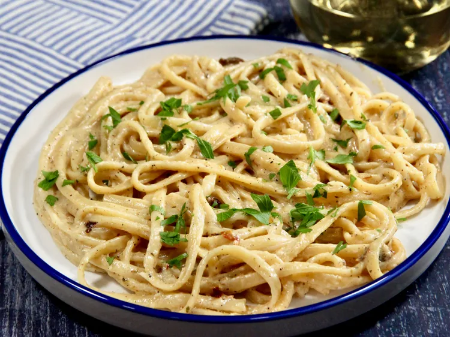

Creamy Cajun Pasta
EThis creamy Cajun pasta gives subtle heat with hints of interesting spices, but won’t set your mouth
on fire. This is a perfect choice for an easy, succulent
weeknight dinner that will have everybody asking for seconds.
How to Make Grilled Cheese
You'll find a detailed ingredient list and step-by-step instructions in the recipe below,
let's go over the basics:
Ingredients:
- 4 8 ounces linguine
- 2 tablespoons unsalted butter
- 3 cloves garlic, minced
- 3 tablespoons butter, divided
- 2/3 cup heavy cream
- 1 1/2 tablespoons Cajun seasoning, such as Tony Chachere’s®, or to taste
- 1 tablespoon all-purpose flour
- 1/2 teaspoon dried Italian seasoning
- 1/2 cup freshly grated Parmesan cheese
- freshly grated black pepper, to taste
- chopped fresh parsley or sliced green onions, for garnish
Directions:
- Bring a large pot of salted water to a boil. Add linguine and cook al dente according to package
directions, 8 to 10 minutes. Drain, reserving 1/2 cup pasta water.
- Meanwhile, melt butter in a skillet over medium heat. Add garlic, and cook until fragrant, about
30 seconds. Pour in white wine and lemon juice, and bring to a boil. Reduce heat, and simmer,
stirring occasionally, for about 3 minutes.
- In a small bowl, whisk cream, Cajun seasoning, flour, and Italian seasoning together until smooth.
Gradually add to the skillet, whisking constantly until well incorporated,about 1 minute. Stir in
Parmesan and sun-dried tomatoes, stirring until slightly thickened, 1 to 2 minutes.
- Add linguine, and toss until well coated. If a bit thick, add pasta water a teaspoon at a time to
reach your desired consistency. Season with black pepper,
garnish with parsley or green onions, and serve.
go back to all the the recipes